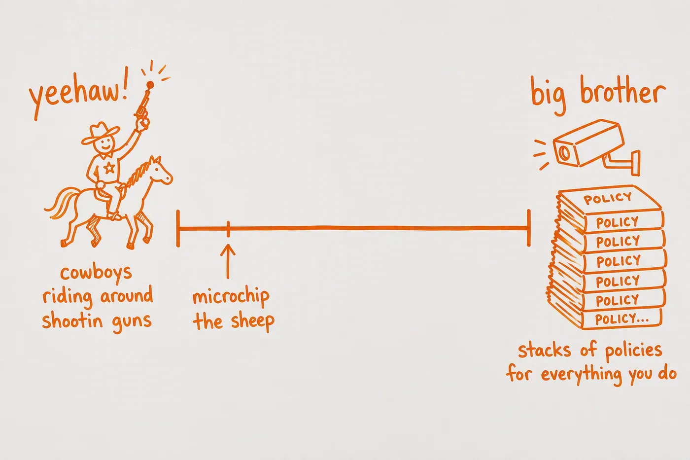

Some of My Favorite Questions
asked early, often"It's six months from now. You are really happy. What has changed?"
"What's actually in your way — the manual task you dread, the approval stuck somewhere, the data you don't have?"
"What does the team already know that leadership needs to hear?"
"What are you reading?"
Two Kinds of Problems.
in practiceEverything Starts on a Whiteboard
thinking out loudI can't work without a whiteboard. When I got to SFMTA I talked my director into putting one in my cubicle, and in meetings I'm usually the person who's drifted over to it and started sketching — lists, flowcharts, deliberately ugly diagrams. Getting the shape of a problem where everyone can see it and poke at it is most of the battle.
My rule of thumb is the line usually attributed to Einstein: make it as simple as possible, but no simpler. A diagram earns its spot on the board by being the simplest version that's still honest. At Apple, one board carried a sketch of the high-availability backup system for our databases for years.
Microchipping Sheep
the metaphor I use
Every org I walk into sits somewhere on this line, usually way over at the YEEHAW end — cowboys on horseback with their guns out, which is roughly where ops teams like to live. A good part of my job is nudging the marker one step toward the middle, while reassuring everyone I have zero interest in the other end. I'm not building a surveillance state. I just want to microchip the sheep.